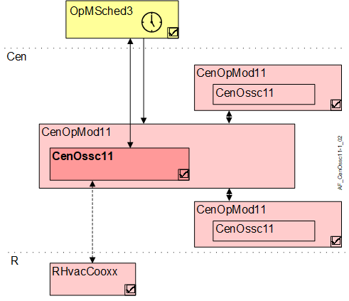

中央最优启动/stop控制（CenOssc11）
Overview
应用功能》Central optimum start stop control 11, Desigo V6.0 (primary)" (CenOssc11) 将来自优化器的 start/stop 信息分发到下级 AFsCenOssc11或相连的房间。此外，它还读取相连房间的室温，并提供平均值、10 个最低值的平均值和 10 个最高值的平均值，以供上级 AFs 和 BACnet 对象使用。

岑 | 中央职能 |
CenOpMod11 | Central operating mode determination 11 |
CenOssc11 | Central optimum start stop control 11, Desigo V6.0 (primary) |
R | 房间 |
RHvacCooxx | Room HVAC coordination set 11, for fan coil unit, radiant ceiling, radiator, radiant floor / 12 / 13 / 17 |
Function
优化器使用接口数据点来编写命令。
配置发生在优化器中。
Interface to local and superordinate functions
描述 | 目的 | 类型 | 来源 | 根据层次分组进行评估 |
|---|---|---|---|---|
Warm-up | WarmUp | BCnfVal *) | 来自具有 OSSC (OpMSched3) 的操作模式调度程序 | 上级 AF 获胜，WarmUpVal被使用 |
Warm-up value | WarmUpVal | BCalcVal | 来自可选的上级 AFCenOssc11 |
Cool down | CoolDwn | BCnfVal *) | 来自具有 OSSC (OpMSched3) 的操作模式调度程序 | 上级 AF 获胜，CoolDwnVal被使用 |
Cool down value | CoolDwnVal | BCalcVal | 来自可选的上级 AFCenOssc11 |
Next operating mode | NxOpMod | MCnfVal *) | 来自具有 OSSC (OpMSched3) 的操作模式调度程序 | 上级 AF 获胜，NxOpModVal被使用 |
Next operating mode value | NxOpModVal | MPrcVal | 来自可选的上级 AFCenOssc11 |
Average room temperature | RTempAvrg | ACalcVal | 室温来自 RHvacCooxx 或可选来自下级 AF | 下属 AF 获胜 |
Minimum average room temperature | RTempAvrgMin | ACalcVal | ||
Maximum average room temperature | RTempAvrgMax | ACalcVal |
*) 无配置值，仅用作接口。
Configuration
没有任何。
Interface
界面 | 描述 | 类型 | 参考号 | 所有者 |
|---|---|---|---|---|
WarmUp | Warm-up 0:Inactive | BCnfVal | ● | - |
WarmUpVal | Warm-up value 枚举见WarmUp | BCalcVal | ● | - |
CoolDwn | Cool down 枚举见WarmUp | BCnfVal | ● | - |
CoolDwnVal | Cool down value 枚举见WarmUp | BCalcVal | ● | - |
NxOpMod | Next operating mode 1:Protection | MCnfVal | ● | - |
NxOpModVal | Next operating mode value 枚举见NxOpMod | MPrcVal | ● | - |
RClmOpModIn | Room climate operating mode input value 1:Off | MCalcVal | ● | - |
CenOpModMst | Manager for central operating mode | GrpMaster | ◉ | CenOpMod11 |
Engineering and commissioning
没有任何